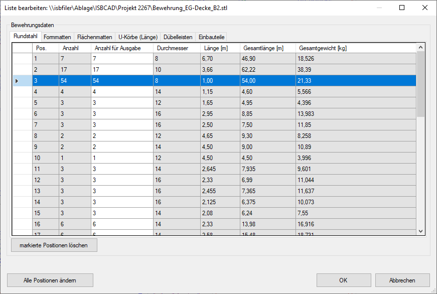
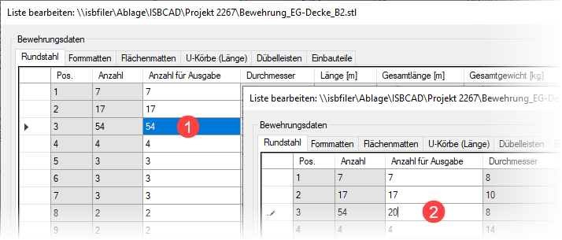
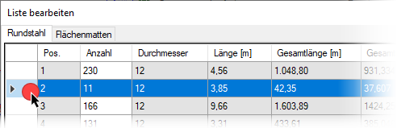
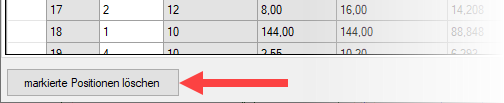
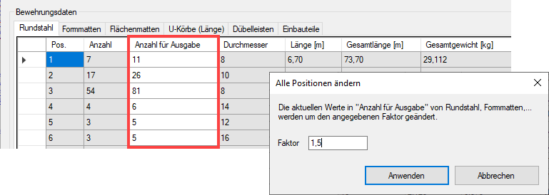

")
")
 /
/ 
In diesem Dialog können Sie die Stückzahlen und laufenden Meter (lfdm) ausgewählter Positionen anpassen oder auch Positionen löschen. Die Anpassungen werden an der Stahlliste der im Stahllisten-Dialog markierten Datei vorgenommen und werden in der Biegeliste berücksichtigt.
·Die Änderungen an der Stahlliste sind temporär. Nach dem Schließen des Stahllisten-Dialogs werden die Änderungen verworfen und die vorherigen Angaben wiederhergestellt.
·Mit der Funktion [Option | StlLis | Neu erzeugen | Stahlliste (Dialog) → Daten lesen] können Sie die aktuelle Stahlliste durch eine andere ersetzen und anschließend bearbeiten.
·Mit der Funktion Alle Positionen ändern können Sie einen Faktor angeben, mit dem sämtliche in der Liste enthaltenen Positionen hochgezählt werden sollen.
·Sie können für die Ausgabe der Liste vorübergehend die Planbeschreibung ändern.
Optionen im Dialog "Liste bearbeiten"
 |
Registerkarten
Je nachdem, welche Stahllelemente in der Stahlliste enthalten sind, werden die entsprechenden Registerkarten (Rundstahl, Formmatten, Flächenmatten, U-Körbe, Dübelleisten und Einbauteile) im oberen Dialogbereich angezeigt.
Werte ändern
Markieren Sie den Tabelleneintrag (1) und tippen Sie den neuen Wert ein (2).
 |
·Nicht editierbare Zellen sind grau hinterlegt.
·Mit der Eingabetaste bestätigen Sie und wechseln zugleich in die nächste Zeile.
·Von der Änderung betroffene Werte wie Gesamtlänge und Gesamtgewicht werden automatisch angepasst.
·Um die Eingabe abzubrechen und den vorherigen Wert wiederherzustellen, drücken Sie die ESC-Taste. Das Wiederherstellen ist nicht möglich, wenn Sie den Wert bereits bestätigt haben. Schließen Sie den Dialog mit Abbrechen, um alle Änderungen rückgängig zu machen.
markierte Positionen löschen
Klicken Sie in die erste Spalte des Tabelleneintrags, um die entsprechende Position auszuwählen.
 |
Klicken Sie anschließend auf markierte Positionen löschen.
 |
Auswahlmöglichkeiten beim Löschen
Einzeln markieren |
Strg + linke Maustaste |
Alle markieren |
Strg + A |
Im Block markieren |
Klicken Sie die erste Position an, die markiert werden soll und anschließend, bei gedrückter Umschalt-Taste, die letzte Position. Alle Positionen, die sich zwischen den ausgewählten Positionen befinden, werden markiert. |
Alle Positionen ändern
Geben Sie einen positiven Faktor (Ganz- oder Dezimalzahl) ein, mit dem die Werte in den Spalten Anzahl für Ausgabe und Länge für Ausgabe [m] (U-Körbe) auf jeder Registerkarte multipliziert werden sollen. Bestätigen Sie mit Anwenden. Alle übrigen Werte wie z. B. das Gesamtgewicht passen sich entsprechend an. In der Spalte Länge [m] (U-Körbe) werden Ihnen die ursprünglichen Stahllistenwerte angezeigt.
 |
OK
Übernimmt die Änderungen und schließt den Dialog.
Abbrechen
Verwirft alle Änderungen und schließt den Dialog.
Siehe auch:
·Einzelliste (Stahlliste im Hauptmenü)
Zugehörige Referenzen: